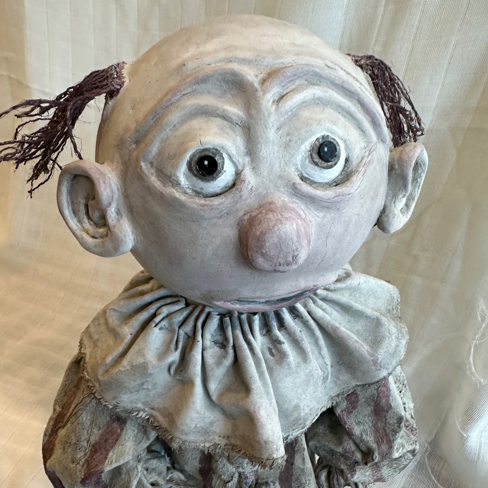

The Wayward Collection
A gathering of unconventional characters, each with a personality entirely their own. Playful, imperfect and unapologetically individual, these handcrafted sculptures celebrate eccentricity, unexpected details and the charm of being a little different.